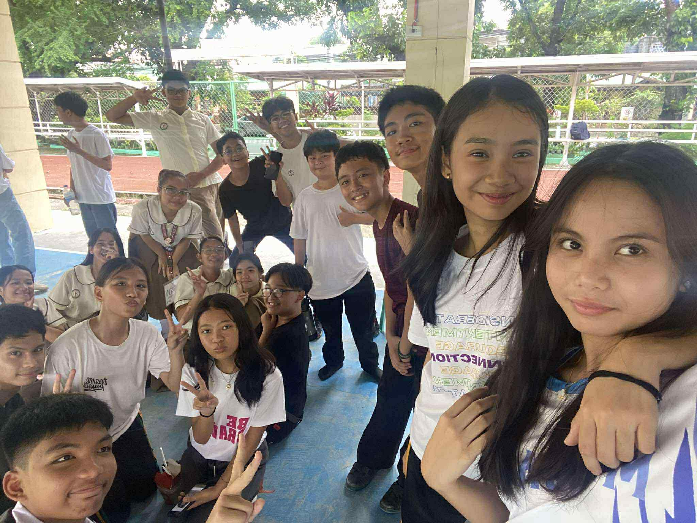
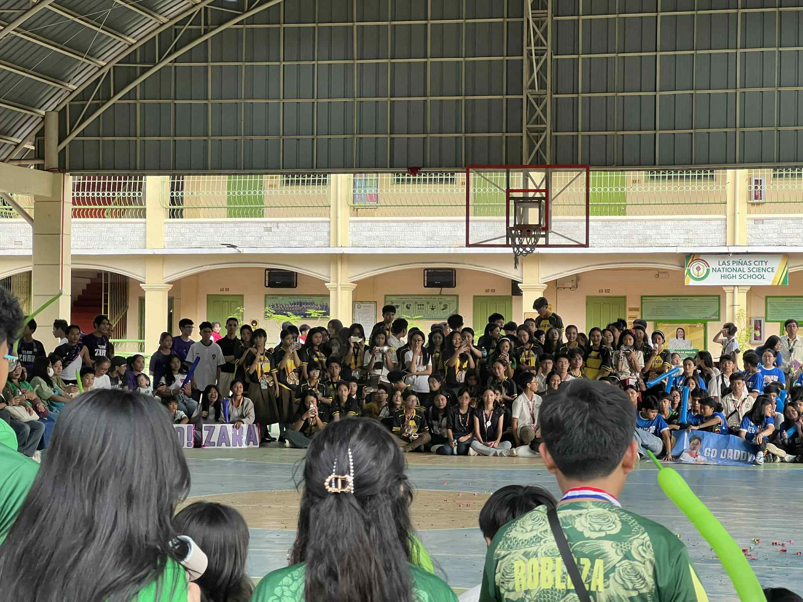

Reflection on Intrams!
What is the most important thing I learned from the event?
During this year’s intramurals, I was assigned to be one of the coaches for Dancesport. One of the most important lessons I learned from this experience is to always be prepared for anything and to never give up too early. On competition day, one of the couples we coached didn’t reach the final round for their first category. I was really surprised because I thought they performed well, but perhaps the judges saw something different. They were clearly disappointed, and as their coach, I understood how they felt because I have been in their place before. However, we were all caught off guard when that same couple made it to the finals in two other categories and even won 2nd place overall. It taught me that even when things don’t start the way you hope, you should keep believing, stay ready, and continue giving your best because success might come when you least expect it.
How can I apply what I learned in real-life situations?
I can apply this lesson in real life by not giving up after my first failure. For example, when I start applying for college, it’s possible that I won’t get accepted into every school I apply to. But instead of feeling discouraged, I will take it as a sign to keep improving and to look for new opportunities. I have learned that setbacks do not define my worth; they simply prepare me for something greater if I choose to persevere.
Did I actively participate in the event? How?
Yes, I actively participated throughout the event. During the opening ceremony of the intramurals, I had the privilege of delivering an inspirational speech in front of the whole school, which was a big step for me since it was my first time speaking formally to such a large audience. I also took part in the unity dance “Palarong Pambansa” as a member of the Dance Troupe. Aside from performing, I was one of the Dancesport coaches, where I shared the techniques and lessons I learned from my seniors with the new generation of dancers. It was fulfilling to see them grow and perform with confidence.
If I were to teach this topic or subject to a classmate, how would I explain it?
If I were to explain this experience to a classmate, I would emphasize the importance of sportsmanship, teamwork, and resilience. I would tell them that winning isn’t everything; what truly matters is learning how to handle both victory and defeat with grace, and how to support others in the process.
Why is it important to have events like this?
Events like the intramurals are important because they bring the school community together and allow students to develop valuable life skills outside the classroom. These activities teach discipline, teamwork, leadership, and emotional strength. They give students a chance to discover hidden talents, build friendships, and create memories that shape their character. Most of all, such events remind us that success is not just about trophies but about growth, effort, and unity.

